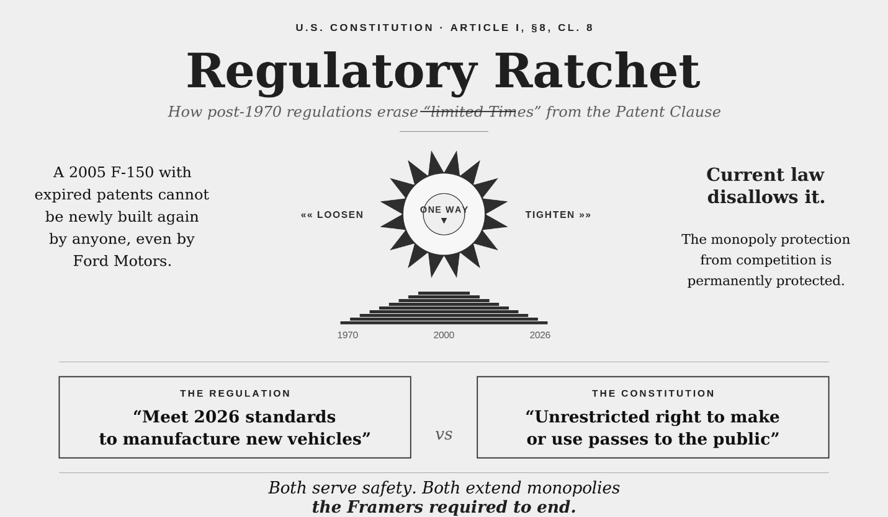
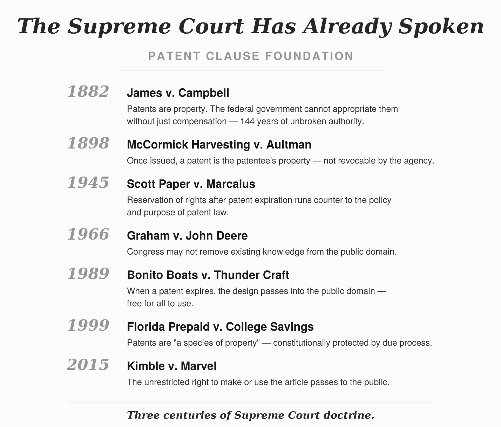
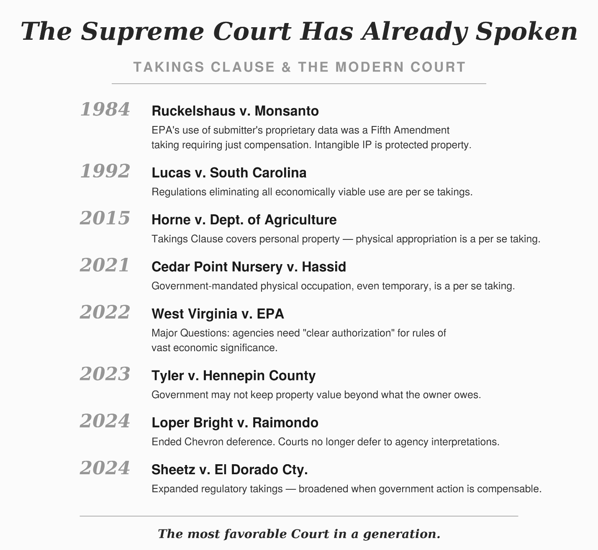
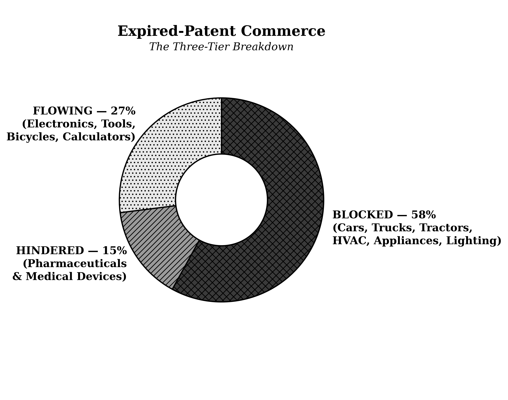
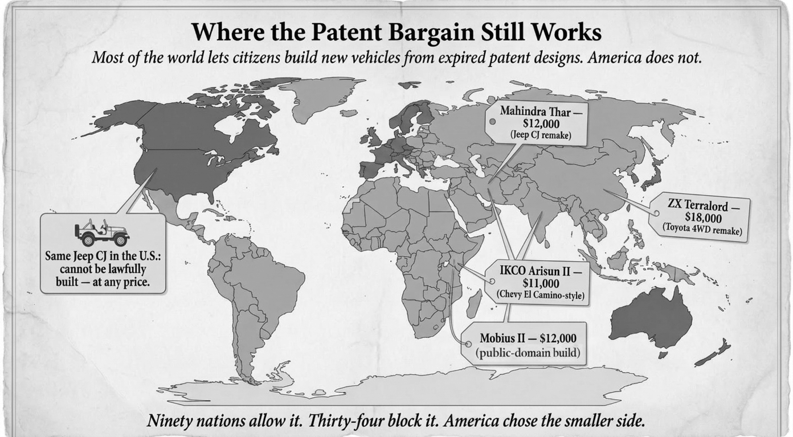

The Claim
Who wrote it, why an outsider can be right, the problem, the case law, why nobody sued, the environmental objection retired, and ninety countries.
Contents · Next: Page Two — What Happened (27 minutes) · then Page Three — The Case (49 minutes)
Each summary below points at a chapter rather than replacing it. Where the full text is already published, the link sits directly beneath the heading.
Preface — Why a Co-inventor of an AI Patent Wrote a Book About What Happens After Patents Expire
2½ minutes| Why this is in front of you |
|---|
| Before you spend an hour on a constitutional argument, you will want to know who is making it and how it was built. The Preface answers both without asking you to take anything on trust: the credentials are checkable, the AI methodology is disclosed rather than glossed — the abbreviated Preface linked above names each tool and the work it performed — and the known failure mode of AI-assisted legal work is named rather than hidden. |
The author is not a lawyer and does not claim to be one. He is Roleigh Martin, a co-inventor of U.S. Patent No. 5,359,509, an early artificial-intelligence system for adjudicating health-insurance claims that was archived in the permanent research collection of the Smithsonian Institution. He spent thirty-four years inside the information-technology organization of a Fortune 25 health insurer, working principally on complex code and database design. His degrees are a B.S. from what is now Truman State University, with a triple minor in American literature, Russian literature, and physical science, and an M.A. in sociology from the University of Northern Iowa, followed in 1978 by a diploma in data processing from Western Business College in Portland, Oregon, an institution that no longer exists.
Between 1990 and 1995 he founded and edited ShareDebate International, one of the first electronic magazines on the Internet, whose contributors included Milton Friedman, Murray Rothbard, George Gilder, Jerry Pournelle, and Leonard Peikoff. Between 1998 and 2000 he published sixty-one articles as a Y2K analyst, gave the keynote at the IQPC Y2K conference in London, and was cited by the President’s Y2K Council and the World Bank. He is seventy-six, lives in Northern Kentucky, and founded the Make American Living Affordable community on X, which has grown past 115,000 members. He has published more than 111 long-form articles drawing more than 7.8 million cumulative impressions.
The Preface offers that record for one purpose: to answer the question a reader is entitled to ask, which is why this man saw a constitutional question that patent attorneys, environmental lawyers, regulatory economists, and constitutional scholars have spent fifty-six years not seeing. Its answer is that the question sits across four disciplinary boundaries and is invisible from inside any one of them, and that a career spent moving between fields is the specific preparation for noticing it. It also offers a second answer, narrower and more concrete: a career reading source code produces a habit of reading a structured text for what it says rather than for what practice has settled into. Read that way, “limited Times” has a type signature. It is a duration. Durations end, and something happens at the end.
The Preface is equally direct about method. The analysis was assembled with eleven listed artificial-intelligence tools under the standard the U.S. Copyright Office set out in Copyright and Artificial Intelligence, Part 2: Copyrightability, published 29 January 2025. Every citation any tool produced was vetted for relevance and accuracy, and where editing was needed, it was done. The manuscript record, as of 30 July 2026, stands at forty-five files carrying seven hundred seventy-three saved revisions, made for many reasons beyond the above — coherency, readability, sequencing, and so on. The author is diligent to avoid AI hallucinations and misdirection.
When Outsiders Advance Constitutional Law and Other Disciplines
4¼ minutes| Why this is in front of you |
|---|
| The threshold question for any attorney asked to look at this work is whether a layman’s constitutional argument deserves the time. This chapter does not ask you to assume it does. It sets out the conditions under which outsider claims have historically been worth checking, and the conditions under which they have not, and invites you to apply the test yourself. |
This chapter exists to answer the objection you might have, which is that “a non-lawyer working with AI tools is not a promising source of constitutional argument.” It answers by assembling twenty cases — in law, medicine, geology, astronomy, linguistics, and financial regulation — in which a field held the decisive evidence and did not count it until someone asked a question the field’s routines did not generate.
Four of the twenty are constitutional cases, and in every one the fact that moved the doctrine came from outside the law. Aiko Herzig-Yoshinaga had no law degree, no university post, and no institutional standing; as a teenager she had been imprisoned at Manzanar. Working in the National Archives in the late 1970s she found what forty years of litigation had not — the government’s own original copy of General DeWitt’s Final Report, containing passages a later revised version had removed. The deleted material showed the government had known there was no time for individual loyalty hearings, and that the claim of military necessity made to the Supreme Court in 1944 was made while contrary evidence sat in the file. Fred Korematsu’s conviction was vacated on a writ of coram nobis in 1983, and in Trump v. Hawaii (2018) the Court said Korematsu had been gravely wrong the day it was decided. The evidence was not merely available somewhere. It was in the government’s own files, put there by the government, kept by the government, for forty years.
The historians in Lawrence. Bowers v. Hardwick (1986) upheld a Georgia sodomy law and stated that laws against homosexual conduct had ancient roots. Seventeen years later George Chauncey, Nancy Cott, John D’Emilio, Estelle Freedman and others filed a brief in Lawrence v. Texas taking that statement apart from sources that had been in print the whole time. The historical record did not say what Bowers said it said; the category of person Bowers described did not exist in the period Bowers pointed to. The Court overruled Bowers. Nothing was discovered. A court had asserted a fact, everyone believed it, and for seventeen years nobody checked it against a body of scholarship that already said otherwise.
Josephine Goldmark was research director of the National Consumers League and had no law degree. Of the hundred and thirteen pages filed for Oregon in Muller v. Oregon (1908) under Louis Brandeis’s name, she and her researchers supplied about ninety-eight — factory inspection reports, medical testimony, foreign labor statutes. Roughly two pages were legal argument. The Court upheld the law and took formal notice of the material, and the Brandeis brief is the ancestor of every filing that brings a court facts rather than precedent. The chapter attaches two corrections rather than leaving the case as a clean victory: some of the medical evidence was later refuted, and Muller upheld the law on a rationale of women’s physical dependence — a ground for limits imposed on women and not on men. That rationale, and the protective-labor regime it licensed, have been contested ever since, and the book takes no position on the dispute. Praise the method, the chapter says. Do not praise the holding.
Kenneth and Mamie Clark were psychologists, not lawyers, and the chapter is careful to deflate the story most readers know. The doll studies did not decide Brown v. Board of Education. They appear in footnote eleven, supporting a conclusion the Court had already reached on constitutional grounds, and the footnote became famous because it was attacked. What the Clarks supplied was a finding the Court was willing to state — that segregation produced a sense of inferiority in children that affected their learning. It had been observable for decades. They did not win Brown. They gave the Court a sentence it could write.
The chapter draws the consequence that matters most to this book, and it is not a flattering one: Goldmark did not argue Muller, the Clarks did not argue Brown, Herzig-Yoshinaga did not argue Korematsu. Each found something. Somebody else carried it. That is the division of labor the author of these volumes is proposing, and it is why the book is addressed to attorneys.
The pattern outside law is the same. Ignaz Semmelweis read his own hospital’s mortality ledgers. Joseph Goldberger noticed that asylum inmates contracted pellagra and asylum staff did not. Robin Warren saw spiral bacteria on gastric biopsies that pathologists had been photographing since the nineteenth century. J Harlen Bretz walked the Channeled Scablands his critics had mostly not visited. Yuri Knorozov read a sixteenth-century Spanish manuscript that had been in print since the 1860s and recognized it as a syllabary rather than a failed alphabet. In every case the material was public. What was missing was the question.
The distinction the chapter finally draws is the one that matters for this book: what an outsider supplies is the question, and what the field supplies is the judgment about whether the answer is true. That is the relationship this book is asking a lawyer to enter. Twenty cases at two and a half minutes is a list; the chapter itself is the argument, and it is published in full at the link above.
Four Problems, One Remedy
4¼ minutes| Why this is in front of you |
|---|
| This is the only chapter that states the whole claim in one place, and it defines the remedy narrowly enough to dispose of the objection most attorneys raise first — that “the argument amounts to deregulation by litigation.” It does not. A certified remanufactured product answers to the standards of the platform year it mimics; the wall time-shifts rather than falls, and the third leg is conceded to be legislative rather than judicial. Everything on Pages Two and Three assumes this chapter. |
The opening chapter is the map, and it is the only chapter that states the whole claim in one place. It opens not with the Constitution but with four grievances, on the argument that they share a single cause.
The cost of living. A pickup truck that should cost $25,000 in real dollars costs $72,495; a combine that should cost $108,000 costs $646,000; an HVAC replacement that should cost $3,000 costs $18,000. The surveillance subscription. Every new vehicle carries a mandated event data recorder under 49 C.F.R. § 563, a backup camera under FMVSS No. 111, and automatic emergency braking finalized by NHTSA in 2024 — and GM, Honda, and Hyundai have been documented selling granular driving-behavior data to brokers who resell to insurers. No one can currently buy a new vehicle lawfully without it. The robotic replacement of working Americans. Autonomous trucking competes only because regulation has priced the human-operated rig so high that a half-million-dollar platform looks reasonable beside it; a patent-expired remanufactured semi at a fifth the price of a new one reverses that arithmetic. The lost relationship between driver and machine. The manual transmission fell from roughly a third of new sales in the 1980s to under one percent, which the chapter attributes to CAFE standards, EPA test protocols, and mandates that assume an automatic as the baseline.
The single cause is a regulatory wall built piece by piece since 1970. The chapter is specific about how the cancellation was accomplished: not by repealing the public’s right, which could not have been done openly and was not attempted, but by making the expired design unbuildable. EPA emissions tiers, NHTSA safety mandates, and DOE efficiency standards made it effectively impossible to manufacture a tractor, a pickup, an HVAC system, a semi-trailer, or an incandescent bulb on patents that expired twenty, fifty, or a hundred years ago. The technology was legally free and nobody could lawfully build it. The chapter names the resulting asymmetry precisely — the original manufacturer is measured against the standards he met when he built the product, while the remanufacturer of his now-expired design is measured against standards ratcheted up decades later.
The mechanism is the regulatory ratchet, engineered to be irreversible. The anti-backsliding provision at 42 U.S.C. § 6295(o)(1), enacted in March 1987, tells every future administration that an efficiency standard once set can never be relaxed. The same one-way motion runs through EPA tiers and NHTSA mandates. The patent still expires on schedule; what does not expire is the incumbent’s protection from low-cost remanufactured competition. Converting that protection from temporary to permanent is what makes this a constitutional question rather than a policy dispute. The chapter traces the ratchet’s installation to the Legislative Reorganization Act of 1970, citing D’Angelo and Ranalli in Foreign Affairs (2019), and notes that registered lobbyists went from an estimated 200–400 before 1970 to 13,070 by 2024.
The chapter's central claim about the ratchet is that its one-way motion is a design feature rather than a byproduct. An ordinary rule tightens under one administration and loosens under the next; these do not. Each tightening becomes the permanent floor, so that the incumbent’s protection from remanufactured competition outlives the patent that was supposed to be the whole of it.

Three chapters of doctrine sit behind that claim, and the chapter previews them in two panels rather than asking the reader to wait. The first gathers the Patent Clause authorities — seven cases between 1882 and 2015 — on what the public receives when a monopoly ends.

The second gathers the Takings authorities and the modern administrative-law cases — eight decisions between 1984 and 2024, running from Chevron to Loper Bright — which together supply both the second constitutional prong and the reason the case became filable when it did.

The injury is put at roughly $22 trillion transferred from households to incumbent manufacturers since 1970, about $3,385 per household per year — a midpoint the chapter openly derives from two AI-assisted analyses that bracket it, and treats as a floor rather than a ceiling. The claimed effect of restoration is roughly a one-third reduction in the cost of living within a decade, above 50 percent for households that adopt remanufactured goods fully and at least 15 percent for those who keep buying new, through competitive discipline on incumbent prices.
The remedy is stated with unusual care, and it is narrower than most readers expect. It requires no act of Congress, no amendment, no new legal theory, and no one to break a law; it can be obtained by a single plaintiff with standing in a single federal courtroom. Its operational form is a grandfather exemption plus independent engineering certification, both flowing from the constitutional holding itself. The chapter is candid that this is two legs of a three-legged stool: the third leg — a tariff or import restriction protecting American plants building patent-expired American platforms — cannot come from a court and must come from Congress or the President under Article I trade authority. The case has never been filed. It is a question of first impression.
Jefferson’s Bargain
2¾ minutes| Why this is in front of you |
|---|
| Four Supreme Court holdings on the post-expiration public domain, stated with what each actually held. Bonito Boats’ vested-right language is the doctrinal anchor of the Takings prong on Page Three, and the reading of Graham is the anchor of the Patent Clause prong. Graham is also contested ground — Eldred answered a Graham-based argument by confining that passage to patentability rather than congressional power — so this is where the book plants its stake on the most argued-over authority in its foundation. |
This is where the argument acquires case law, and it is the chapter to read if you want to know quickly whether there is anything here.
The chapter opens with Jefferson’s 1813 letter to the Baltimore miller Isaac McPherson — the source of the much-quoted line about ideas spreading like fire — and recovers the argument the quotation usually amputates. Jefferson’s point was that ideas are not property, that the patent is therefore not the recognition of a natural right but a narrow temporary exception carved out of the natural freedom of ideas, and that the exception is granted for a public purpose. The bargain has two halves: the temporary monopoly, and the public’s reciprocal right to make, copy, improve, and remanufacture when the monopoly ends. The chapter traces the lineage back past the founding to the English Statute of Monopolies of 1624, whose fourteen-year term was set at twice the seven-year guild apprenticeship — the monopoly was to last about as long as it took a new generation of craftsmen to learn the trade. The Patent Act of 1790, drafted substantially by Jefferson and signed by Washington, adopted the same fourteen years.
The section that matters most to a practitioner is titled The Court Has Said So, and it sets out four Supreme Court decisions across forty-four years. Scott Paper Co. v. Marcalus Manufacturing Co. (1945) held that a private contract could not be used to extend a patent’s practical effect past expiration. Sears, Roebuck & Co. v. Stiffel Co. (1964) held that federal patent law occupies the field, so a state could not use unfair-competition law to recreate a monopoly that had ended. Graham v. John Deere Co. (1966) treated the Patent Clause as both an authorization of congressional power and a limitation on it. Bonito Boats, Inc. v. Thunder Craft Boats, Inc. (1989) struck down a Florida statute protecting unpatented boat-hull designs, holding that federal patent law determines not only what is protected during the term but what is free for all to use after it, and that the public’s right of access to the public domain is vested, and a state may not rescind it.
The chapter then divides expired-patent commerce into three tiers — blocked at roughly 58 percent, hindered at 15, flowing at 27 — and closes with two observations the book relies on later. The first is the firearms exception: core firearms patents have been public domain for decades, American manufacturers compete, prices reflect that competition, and the reason is political rather than technological. The second is what the chapter calls the combinatorial property — that an expired patent enters the public domain not as a preserved artifact but as a component available to be combined with every other expired component. The public domain is a kit of parts.

Why Nobody Noticed: How a Constitutional Violation Hides in Plain Sight
3¼ minutes| Why this is in front of you |
|---|
| “Nobody has ever filed this” reads to most lawyers as evidence the theory is defective. This chapter offers the competing explanation and makes it falsifiable: the case met Chevron at the threshold for forty years and could not reach the merits. If you accept the fourth force, the fifty-six years of silence stops being evidence against the claim. If you reject it, you have identified the book’s weakest joint, and it is worth telling the author so. |
Every attorney who hears this argument asks the same question within the first minute: if this is right, why has no one filed it? The chapter treats that as the strongest objection available and answers it with six forces rather than one.
Force 1. The corrupt ecosystem. The Legislative Reorganization Act of 1970 opened committee proceedings and recorded votes that had previously been closed. Before it, members could vote their conscience where no trade association could telephone within twelve hours to complain; the word lobbyist records the older arrangement, since they waited in the lobby. Marketed as transparency, the reform handed organized interests a real-time scorecard on every legislator and converted the campaign contribution from a general expression of support into a conditional payment. Registered lobbyists grew from a few hundred in 1970 to more than thirteen thousand by 2024. The chapter credits this account to James D’Angelo and Brent Ranalli of the Congressional Research Institute. Around the legislator sit three further nodes: agencies staffed from the industries they oversee and returning to them; the courts, deferential under Chevron for forty years; and a legal-and-consulting economy whose billable hours depend on regulatory complexity persisting. No conspiracy is required. The loop runs on ordinary self-preservation.
Force 2. Bootleggers and Baptists. Yandle (1983) named the pattern in which a durable regulation is sustained not by one coalition but by two with opposite motives — one supporting it for its stated values, the other because it raises the cost of competition. The Baptists supply moral cover; the bootleggers supply political muscle. Each provides what the other lacks, and the resulting architecture is far harder to dislodge than any single-coalition regulation could be.
Force 3. The institutional blind spot. The expired-patent commons does not appear inside the operating thinking of the four institutions where the question would have to surface. EPA, NHTSA and DOE counsel read the Clean Air Act, the National Traffic and Motor Vehicle Safety Act, and the Energy Policy and Conservation Act — not Article I. In Congress, the committees that write regulatory law and the committees that handle intellectual property do not talk to each other, and the question lives in the gap between their jurisdictions. Every administration in fifty-five years has had constitutional lawyers on staff; none was asked whether the regulatory architecture complied with “limited Times.” And academia is split by a membrane: patent scholarship concerns active patents and gives expiration a sentence, while constitutional scholarship treats the Patent Clause as an intellectual-property specialty rather than Article I structure. The chapter reaches for Kuhn on paradigms and de Bono’s nine-dot puzzle — solvers fail because they impose a boundary the problem never stated.
Force 4. The doctrinal floor. This is the force a litigator will care about, because it concerns capability rather than motive. From 1984 until June 2024, Chevron deference meant a challenge would meet the agency’s claim that its rule was a reasonable reading of an ambiguous statute and die at the deference threshold before the constitutional merits were reached. Every patent attorney advising a potential plaintiff knew it. The remaining pieces were assembled slowly: the Declaratory Judgment Act of 1934 supplied the vehicle; pre-enforcement standing reached its modern form in 2014; the relevant Takings doctrine arrived in 2012 and 2021; the Major Questions Doctrine was formalized in 2022. Loper Bright Enterprises v. Raimondo removed the last obstruction in June 2024. It did not answer the Patent Clause question. It made the question askable. The chapter’s own formulation is that the silence was primarily the silence of waiting.
Force 5. Moral acquiescence. The chapter distinguishes between a structure that produces silence without requiring bad faith from most participants, and the separate fact that some participants understood exactly what they were defending. It does not take the comfortable position that nobody is culpable.
Force 6. Rule-induced behavior. The final force concerns what happens to the people inside a system once its rules are set — how a regulatory architecture shapes the conduct, and eventually the perception, of those operating within it, so that the arrangement comes to seem like the nature of things rather than a choice that was made.
The Environmental Question: Why the Patent Bargain Does Not Unleash 1970s Emissions
1¾ minutes| Why this is in front of you |
|---|
| This is the government’s central defense and the objection you would raise first. It is answered here on the facts rather than on policy preference — the emissions-control technology the objection assumes is patent-blocked has in fact been public domain for two to three decades. Reading this before the injury and remedy chapters means the objection is retired before the evidence arrives, which is the order the book intends. |
This chapter is placed early, and deliberately so, because the environmental objection is the one that stops most readers before they reach the constitutional argument. The chapter states the objection at length and in its strongest form — in the voice of someone who holds it — before answering: that “the remedy would hand American buyers a 1970-grade emissions profile, a 1975-grade fuel-economy profile, and a 1990-grade safety profile, and dismantle fifty years of environmental policy for a one-third reduction in the price of consumer durables.”
The answer turns on a factual premise the objection gets wrong. The objection assumes that remanufacturing a 2005 platform means building it with 2005 emissions equipment. It does not. The set of expired patents is not a fixed technology level frozen at a platform year; it is a continuously expanding kit of components, each with its own expiration date. The three-way catalytic converter’s core patents expired in the mid-1990s. Electronic fuel injection went public domain across the 1990s. Oxygen sensors, engine-control units, crankcase ventilation, and onboard diagnostics are all long out of patent. A remanufacturer assembling a vehicle today draws on all of it. The resulting emissions profile is roughly that of 1995 to 2005 — not 1970 — and by EPA’s own criteria-pollutant trend data the largest per-vehicle reductions of the past half-century were achieved by exactly the technology base that became public domain by the mid-2000s.
The chapter also disposes of a specific and frequently repeated claim. The remedy does not bring back leaded gasoline. The lead phase-out was a fuel rule under 40 C.F.R. Part 80, governing what refiners may sell, and it applies to all retail gasoline regardless of what burns it. A remanufactured vehicle runs on the only fuel a buyer can lawfully purchase.
The remaining sections take up why competitive markets would not race to the bottom, the Fifth Amendment as a constitutional safety valve, a concern the chapter attributes to Milton Friedman about compensation shading into subsidy, and a proposed sunset amendment as structural insurance.
Why Wealthy Nations Break the Patent Promise That Poor Nations Honor
4½ minutes| Why this is in front of you |
|---|
| A court asked to grant relief of this scale will want to know the remedy is administrable. This chapter answers that lawful remake markets operate now in roughly ninety jurisdictions — not because those countries relax their standards or key them to a platform's age, but because their requirements remain ones a patent-expired design can carry. Remedial feasibility, not comparative politics, is why it appears on this page. |
The constitutional argument would be worth little if the remedy it seeks had never been administered anywhere. This chapter supplies the natural experiment. Roughly ninety countries permit the new manufacture of vehicles, farm and construction equipment, and household appliances built on designs whose underlying patents have expired. Roughly thirty-four wealthy nations do not — the United States, the twenty-seven European Union member states, the United Kingdom, Japan, South Korea, Canada, Australia, and New Zealand. The ninety are the experiment, the thirty-four are the control, and the price is the dependent variable.

The price gap is documented in the chapter’s roster table, converted to U.S. dollars at average 2024–2026 exchange rates and set against 2024 American manufacturer suggested retail prices for the trims Americans actually buy. The Mahindra Thar runs roughly $10,500–18,500 against about $45,000 for a four-door Wrangler. ZX Auto’s Grand Tiger and Terralord, built on 1997–2004 Hilux and Tacoma platforms and exported to more than ninety countries, run $13,000–18,000 against roughly $35,000 for a Tacoma. The Toyota Hilux Champ, a current-production vehicle built in Thailand on the mature Hilux platform, sells under $13,000. Iran Khodro’s Peugeot-405-derived Samand runs $8,000–9,000 against $22,000–25,000 for the American compact-sedan class, though the chapter flags that figure as distorted by sanctions and currency controls. The pattern runs past vehicles: a 50-horsepower diesel tractor sells in India for roughly $6,000 against a $54,000 American equivalent, a nine-to-one gap wider than any vehicle category. Compact sedans available new at about $9,000 in the honoring markets sell for roughly $35,000 in comparable European Union markets; mid-size pickups at about $13,000 sell for roughly $48,000.
The chapter also answers the objection that the American constitutional argument is parochial. The United States carries the most explicit version of the time-limited bargain, but it is not alone. Brazil’s 1988 constitution, at Article 5 § XXIX, grants the patent as a “temporary privilege.” Mexico’s 1917 constitution, at Article 28, authorizes the monopoly only “for a specified time.” The Philippines’ 1987 constitution, at Article XIV § 13, grants exclusive rights “for such period as may be provided by law.” TRIPS, signed by 166 nations including the United States, settles the term at twenty years from filing. Expiration is universal; honoring it is not.
The worked example is the Mahindra Thar, built in India on the Willys-Overland Jeep CJ lineage whose patents have been public domain for three decades and more, sold new with turbodiesel, four-wheel drive, anti-lock brakes, air conditioning, and electronic stability control at roughly a third of the American price for the same lineage. The chapter is careful that the figures are evidence of what Americans should be paying for American-built versions, not an argument for importing, and it includes a section stating expressly what the book does not advocate.
The safety objection is met with independent certification rather than assertion. Global NCAP, the London-based international assessment program, awarded the 2020 Thar four stars for both adult and child occupant protection in November 2020, citing a stable bodyshell, standard dual front airbags, and ISOFIX anchors. In November 2024 the redesigned Thar ROXX was tested by Bharat NCAP, the Indian government program harmonized with global protocols, and earned five stars for both adult and child occupant protection — the first body-on-frame SUV to do so under that program. It ships with six airbags, electronic stability control, anti-lock brakes with electronic brakeforce distribution, ISOFIX anchors, hill-descent control, and Level 2 driver-assistance features on higher trims. The chapter is careful about the claim it draws: not that the Thar matches a 2024 Wrangler in every particular, but that a vehicle whose mechanical platform’s underlying patents expired half a century ago has been independently assessed against a current-year crash protocol by named safety bodies.
The point the chapter draws is the one that matters constitutionally. The ninety countries are not lax about safety or emissions. India assessed the Thar ROXX at five stars, with electronic stability control and pedestrian protection standard across every variant. Nor do they time-shift: India fixes compliance to the date a vehicle is manufactured, exactly as the United States does, and its rules carry no legacy-platform clause.
The difference lies elsewhere, and it is the difference this book turns on. Those requirements are additive — things a patent-expired platform can carry and still be that platform. The American requirements in the regulated classes have become constitutive: they forbid the design as such, so that what must be altered to comply is the very thing the expired patent was supposed to release. Where the rules stay additive, the bargain operates and needs no remedy. The remedy asked for here is what becomes necessary once they have not.
The chapter closes by connecting that evidence to the American remedy, and the structure is worth a lawyer’s attention because two of its three parts are judicial and one is not. The first judicial mechanism is a grandfather exemption permitting any product whose underlying patents expired some years before a regulation’s effective date — twenty years is the figure the author suggests — to be built to the safety and emissions standards in effect at the time of the patent’s filing rather than to current-year standards. The second is independent engineering certification, modeled on Underwriters Laboratories rather than on any federal agency, verifying that new manufacture under the grandfather framework meets those original standards. Both flow from the constitutional holding itself and require no act of Congress.
The third element cannot come from a court. A judicial remedy unleashing a domestic revival in patent-expired platforms would leave American plants exposed to foreign producers undercutting American workers building American platforms. Protection has to come from Congress or the President under existing Article I trade authority — constitutional tariffs, quantitative import restrictions, or whichever combination the political process selects. The third leg is therefore not a remanufacturing protection but a domestic-manufacturing protection, and every American factory benefits: the patent-expired remanufacturers keep the price floor that delivers cost-of-living relief to households, and the new-design manufacturers price against domestic competitors rather than foreign undercutters. The cost-of-living relief and the manufacturing-jobs revival arrive together. Remove any one leg and the structure topples.
What Is Not Summarized Here, and Why
Twenty-three of the book’s thirty-five chapters are summarized across these three pages. Nothing is left out because it is weak, and the omissions follow a rule: a chapter earns a summary if it does work for a reader who has not yet decided whether the constitutional argument is sound.
Some chapters do their work only after that decision. The Surveillance Premium and The Last Human Driver trace what the wall costs beyond money; What You Can Do: A Citizen’s Playbook is written for a reader already persuaded and looking for the next step. They are in the book because the book is not addressed only to lawyers.
Three chapters on the household cost of the wall — the pickup truck, the grocery bill, and household lighting — are given a short combined account on Page Two rather than a summary each, since they make one argument in three settings.
Two Forewords by Gord Magill are still to be written. Volume 1’s picture section makes its case in twenty-three images and is already a summary; summarizing it again would serve no one. The Epilogue to each volume, and the Preface to Volume 2, are brief and carry no part of the legal argument.
Volume 2 continues past the case itself. What is not summarized there is accounted for at the end of Page Three.